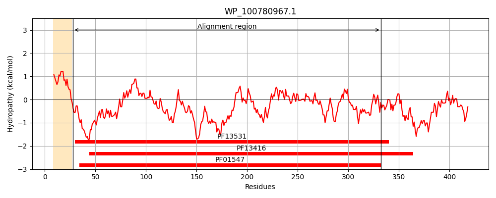
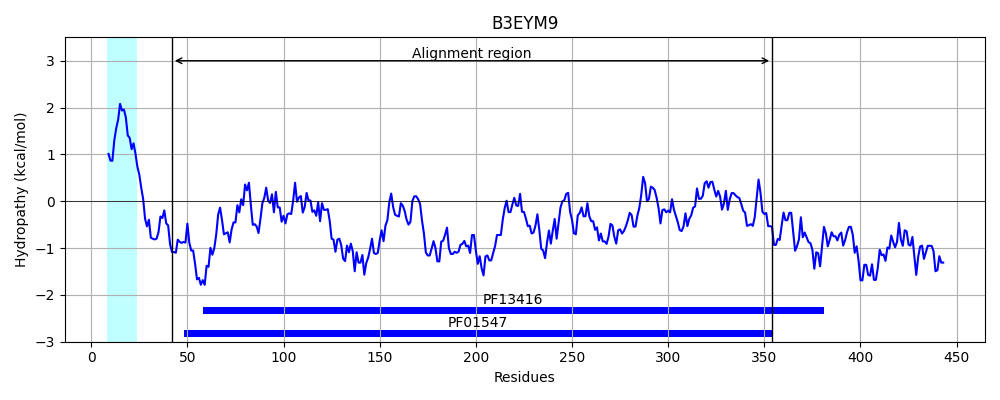
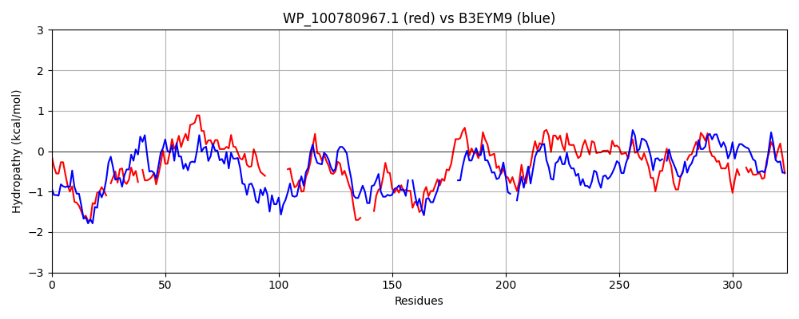

Hit Accession: B3EYM9
Hit TCID: 3.A.1.1.57
Hit Description: gnl|BL_ORD_ID|1808 gnl|TC-DB|B3EYM9|3.A.1.1.57 Arabino-oligosaccharids-binding protein OS=Geobacillus stearothermophilus OX=1422 GN=abnE PE=1 SV=1
Mach Len: 324
e:0.000000
Query TMS Count : 1
Hit TMS Count: 1
TMS-Overlap Score: 0.150000
Predicted Substrates:CHEBI:7758;oligosaccharide
BLAST Alignment:
Score: 245 , Bit scores: 98 bits, E-value: 1.5e-22, Alignment length: 324, Percentage identity: 24
Query: 28 LNVWIRASNDSKNIYKQEAEKFEAK-TGIKIEYFNATTD-FEQRLARATAGNSLPDLIFNDAASLGQFIQLGIAEEIDPQSISGGDLLFPTAWKS---------TRYIDGKYYGVPTSAQTFALFIRKDWREKLGLP-----QPKSWEDIQTLAKAFTTQDPDGNGKNDTYGFIVPASTTRGYASWFMSSFIWQAGGDFVKEEGGKFRASLNTPEVVQAMTFIRTMMCEKVTQPGAINATTADVIPSFRSGQSGMFFSGPYHIALFDKDPGKDNFEVVP-VAGPKGEATLAEGTTVFMMKSSKQ--KDAARKFIEFMISAEGQE 332
L R + YK +KFE K +K+ + D + +L A AG +PD+ + + L ++ + +I + + W+ + G YG+P FAL K EK G+P +P +W++ + K T +D +G+GK D +G T A+W + F+W G D++ E K + +++ P+ ++A+ F M + P A T D + GQ G F GP+ +A FD+ K ++++P AG G+ G+ + S + K+A + EGQ+
Sbjct: 42 LTFMFRGQPQEQTAYKNVVKKFEEKHPNVKVNIVVTSPDQYATKLRAAIAGRKIPDVFYFNPGELRAYVNSNVLLDITKYVENSKGVNLQDIWEKGVNKYRFDGEKVGQGNLYGLPKDLGPFALGYNKTMFEKAGIPLPDKDKPYTWQEFIDVCKKLT-KDTNGDGKLDQWG-------TGLNATWTLQGFVWSNGADWIDES--KTKVTVDDPKFIEALQFFADMQNKYKVTPSIAEAQTLDTYQRWLRGQLGFFPVGPWDLAAFDQQI-KFEYDLIPWPAGSTGKPATWVGSLGIGVSSMTKHPKEAVELALYLSADPEGQK 354 | Protein Hydropathy Plots: |
|---|
|  |  |
Pairwise Alignment-Hydropathy Plot:
|
|---|
|  |